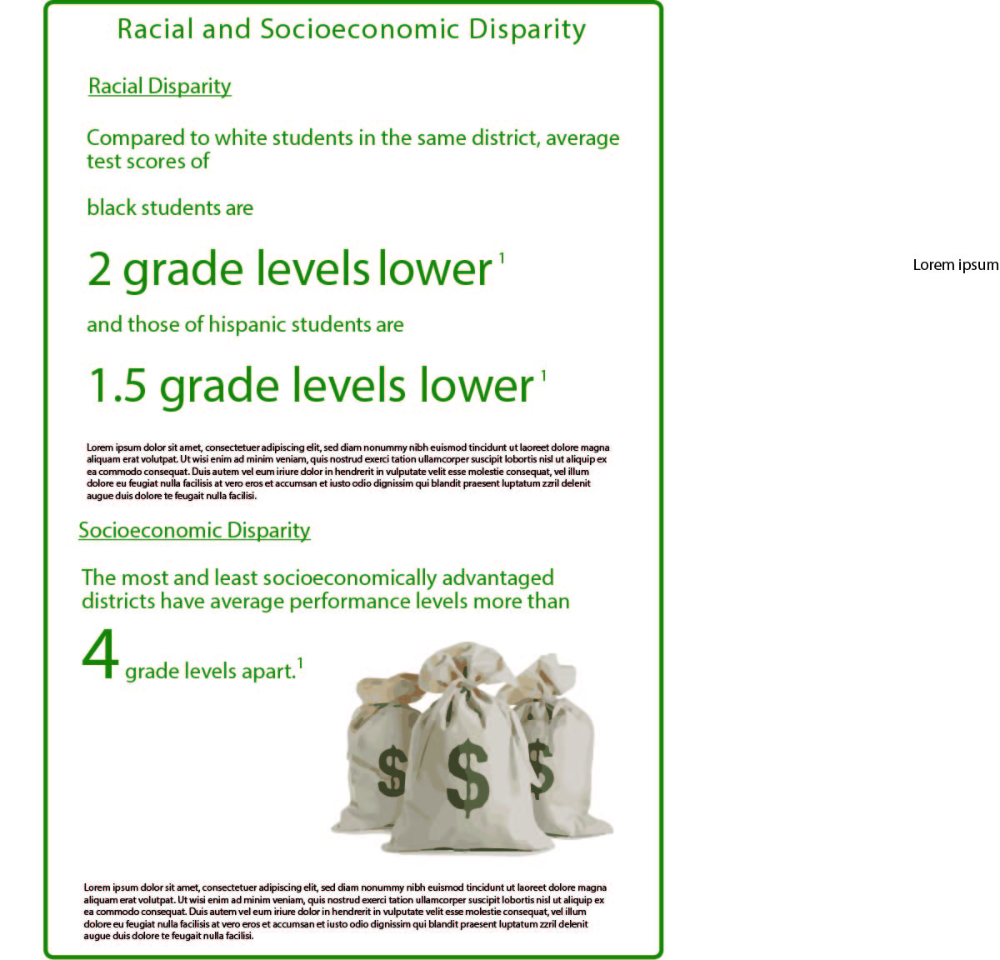
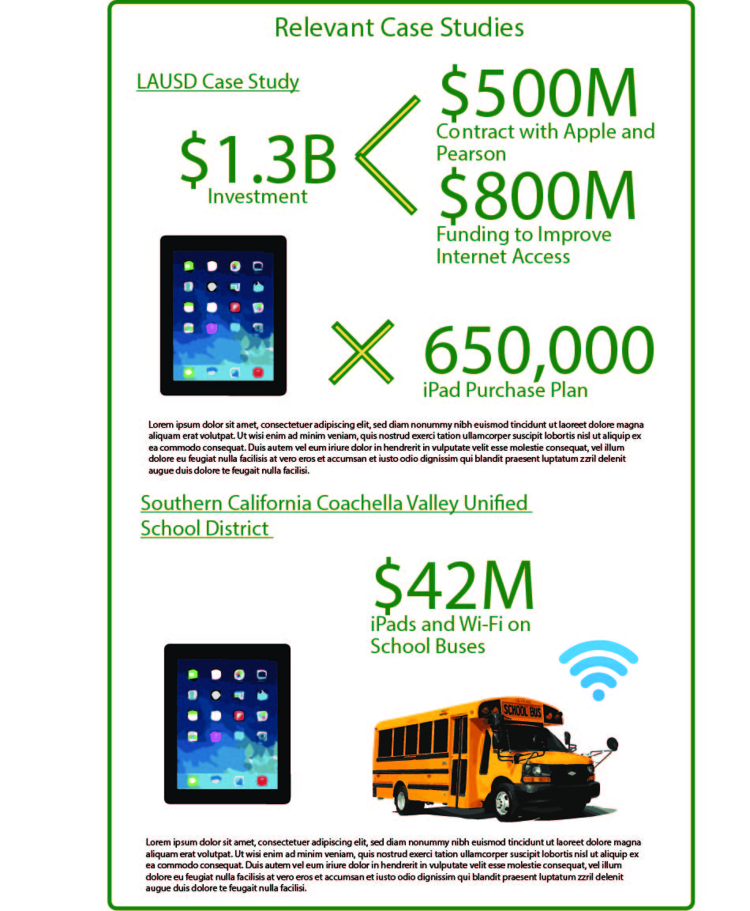

Education Technology in America
Technology is valuable in education. Access to technology improves test scores across the board.What is EdTech
EdTech or Education Technology is a broad term to describe the use of technology in education. This includes computers, tablets, smart whiteboards, software, and much more.Why EdTech?
Technology is changing all aspects of life in an increasingly rapid fashion. Education is bound to be influenced by these changes and school administrations should be ready to adapt and adjust their usage and plans for technology. By providing some data on how technology affects student outcomes across many different factors, we hope to enable school administrations to make informed decisions about EdTech in their school.Racial & Socioeconomic Disparity
Race and socioeconomic status put some students at a disadvantage


Internet Access at Home Matters
Internet Improves Current Teaching Methods & Unlocks New Ones


Tech is a Tool, Not a Panacea
Positive EdTech Outcomes Require Careful Consideration


Conclusions
Simply giving students technology in the classroom does not guarantee improved outcomes. Proper teacher training and buy-in are key in making EdTech a success. In addition you must factor in student backgrounds such that EdTech does not widen the achievement gap. Also access to technology at home sometimes has a larger impact on student outcomes than access in school.The Team

Yuval Barash

Dylan Fox